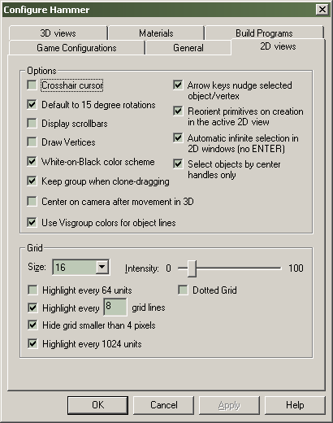

Options: 2D Views tab
The 2D views configuration tab contains various options that effect the display and behavior of the 2D view windows.

Options
Crosshair cursor
When this is enabled, the pointer will turn into a crosshair when it is over a brush.
Default to 15 degree rotations
When rotating a brush, the rotations will automatically be in 15 degree increments.
Tip: You can reverse the behavior of this option temporarily by holding down the SHIFT key during a rotate operation.
Display scrollbars
If this is disabled, scrollbars will not appear in the 2D views. You will be able to scroll the views by using the arrow keys if the option for nudging objects via the arrow keys is disabled (see Arrow keys nudge selected object/vertex option, below).
Tip: You can also hold down the SPACE BAR to pan in any of the 2D views. The cursor will change to a hand icon to show you are in pan mode. Using this function allows you to turn off the scroll bars and save valuable work space.
Draw Vertices
If this is enabled, brush vertices will be shown in the 2D views.
White-on-black color scheme
With this option enabled, brushes and grid lines will appear as white lines drawn on a black background. When this is not enabled, the reverse is in effect.
Tip: The White on black color scheme is the most flexible color mode. It allows you to change the brightness of the grid lines using the Intensity: slider, see below.
Keep grouping when clone dragging
When clone dragging (select an object, hold down SHIFT, and drag the object), this will option will enable the clone objects to retain the VisGroup properties of the original objects.
Center on camera after movement in 3D
While in Camera mode, if you use the mouse to move around the 3D view, the 2D views will automatically center on the new camera position if this option is enabled.
Tip: This only affects the 2D views when in Camera mode. Using the SPACE shortcut to move in the 3d view will not trigger the 2D views to follow the camera position.
Use VisGroup colors for object lines
When this is enabled, the object lines for any non-entity brush will be the color specified in their VisGroup properties when viewed in the 2D views. All objects will appear white if this option is disabled (or black if the White on black color scheme option is disabled). See Edit Visgroup dialog for details on how to set colors for VisGroups.
Arrow keys nudge selected object/vertex
When this is enabled, you can move a selected object or vertex by using the arrow keys. Note that the direction of movement is relative to the current active 2D view, so the mouse cursor's position in the 2D views will dictate which direction the object will move. When no objects are selected, or with this option disabled, the arrow keys will scroll the 2D views in the direction of the arrow key pressed.
Reorient primitives on creation in the active 2D view
When this is enabled, primitives created with the Block Tool will be oriented with their “top” shown in whichever 2D view it was created in. This is most easily shown when creating a cylinder. With this option disabled, the cylinder will be oriented so that the circular part shows up in the XY 2D view, regardless of which view you created it in. This is intended to save you some time and give you predictable results when creating new objects.
Automatic infinite selection in 2D windows (no ENTER)
When this is enabled, using the Selection tool to drag a selection box over an object or objects will immediately cause them to be selected. Without this option, you would need to press ENTER to perform the selection.
Tip: This option can also be turned on and off from the toolbar (see Toggle auto-selection in the MapOperations toolbar section). It is very effective to leave this option enabled for most editing work, then temporarily turn it off when you need to do some finely-tuned selections.
Tip: You can use this option with the Selection box selects by center handles only option (see below) to rapidly select a specific set of objects within your map.
Selection box selects by center handles only
When using the Selection tool to select a number of objects, it defaults to selecting any part of the object the cursor or selection box touches. With this option enabled, it will only select those objects whose "handles" (the small "x" at the center of each object) are within the selection box. Also, in this mode, you can only select individual objects by clicking directly on their handles. This option also effects the selection of objects in the 3d view in wireframe mode. It has no effect on the selection of objects in the filled or textured 3d modes.
Tip: This option can be turned on and off from the Map Operations Toolbar as well.
Grid
Size:
This will be the initial grid size when you start a new map or load an existing one.
Tip: You can change the grid size while editing by pressing "[" and "]" or by buttons on the Map View Toolbar.
Intensity:
This is a slide bar with values from 0 to 100, and sets the intensity (brightness) of the grid lines when the White on black color scheme is enabled. The slider has no effect if the White on black color scheme is disabled.
Tip: Generally, a low Intensity setting works best, so that you are able to differentiate the grid from the objects. Try different settings to see what works best for you.
Highlight every 64 units
This will highlight the grid every 64 units with a slightly brighter line.
Highlight every [x] grid lines
This will highlight a grid line once every [x] lines with a slightly brighter line.
Hide grid smaller than 4 pixels
If the grid size is smaller than 4 pixels, it will generally appear as a gray background instead of a grid, unless you are zoomed in extremely close. When enabled, this option turns off the grid when it gets that small.
Highlight every 1024 units
This will highlight the grid every 1024 units with a red line. The 1024 unit line is significant because the Source Engine compile tools create automatic BSP splits every 1024 units.
Dotted Grid
Enabling this option causes the grid to be displayed as a series of dots, rather than lines. This may help if you find that the grid lines blend into your map lines.
© 2004 Valve Corporation. All rights reserved. Valve, the Valve logo, Half-Life, the Half-Life logo, the Lambda logo, Steam, the Steam logo, Team Fortress, the Team Fortress logo, Opposing Force, Day of Defeat, the Day of Defeat logo, Counter-Strike, the Counter-Strike logo, Source, the Source logo, Hammer and Counter-Strike: Condition Zero are trademarks and/or registered trademarks of Valve Corporation. Microsoft and Visual Studio are trademarks and/or registered trademarks of Microsoft Corporation. All other trademarks are property of their respective owners.